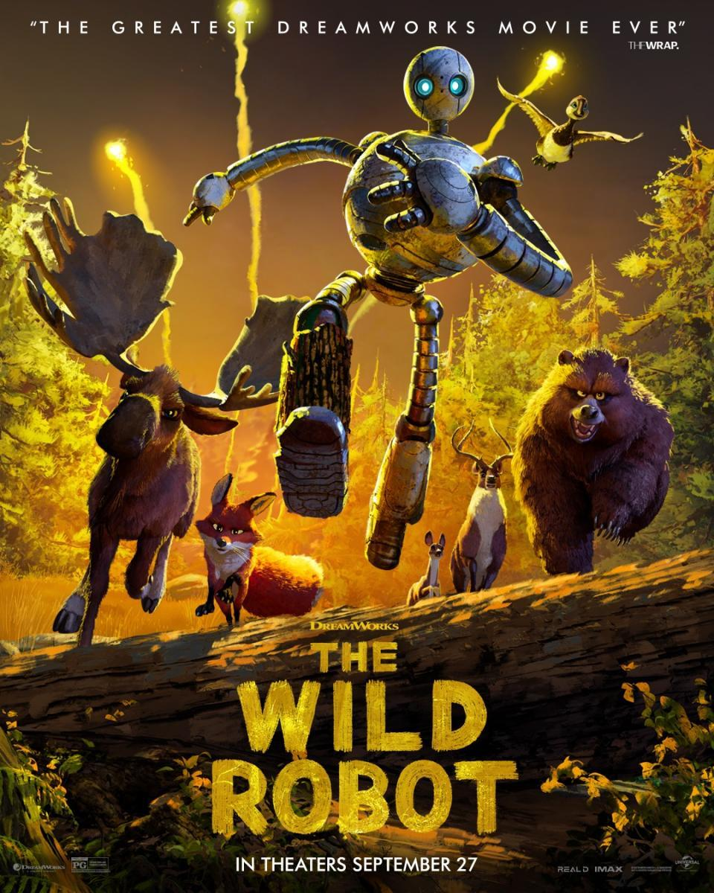
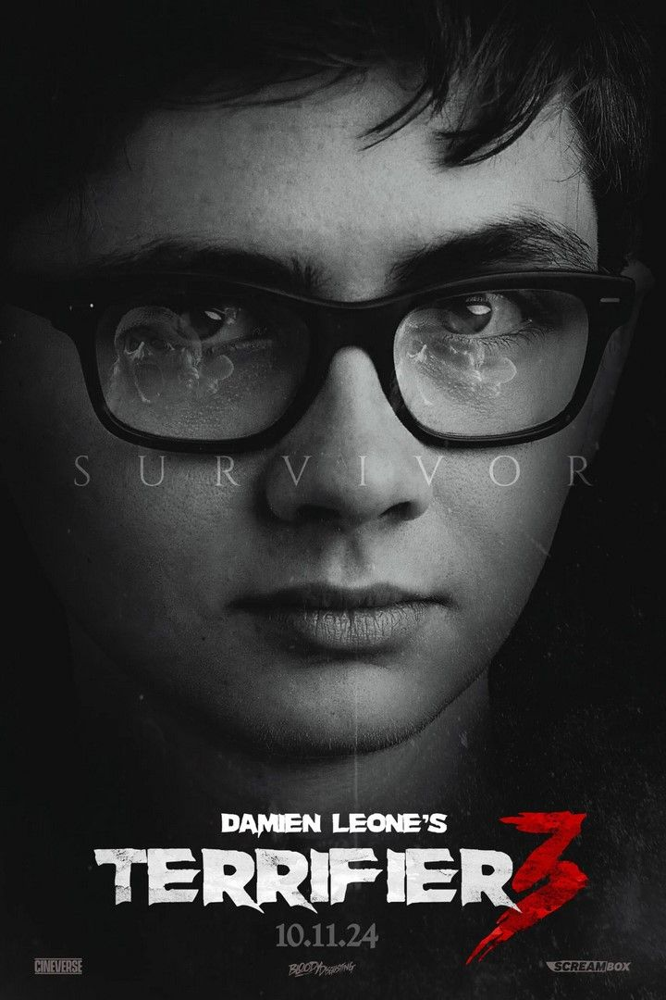

Robot salvaje

Esta épica aventura nos descubre el viaje de una robot (la unidad ROZZUM 7134 o «Roz») que ha naufragado en
una isla deshabitada y deberá aprender a adaptarse al duro entorno, forjando poco a poco relaciones con la
fauna local y convirtiéndose en madre adoptiva de una cría de ganso huérfana.
Terrifier 3

Terrifier 3 es una película de slasher estadounidense de 2024, dirigida y escrita por Damien Leone. Está
protagonizada por Lauren LaVera, Elliott Fullam, David Howard Thornton y Samantha Scaffidi, quienes repiten
sus papeles de películas anteriores. La cinta es una secuela de Terrifier 2 (2022) y reintroduce a la
superviviente poseída Victoria Heyes con un rol más destacado. Cinco años después de sobrevivir a la masacre
de Halloween de Art the Clown, Sienna y su hermano luchan por reconstruir sus vidas destrozadas. A medida
que se acerca la temporada navideña, intentan abrazar el espíritu navideño y dejar atrás los horrores del
pasado. Pero justo cuando creen que están a salvo, Art the Clown regresa, decidido a convertir su alegría
navideña en una nueva pesadilla.
El señor de los anillos

La novela narra el viaje del protagonista principal, Frodo Bolsón, hobbit de la Comarca, para destruir el
Anillo Único y la consiguiente guerra que provocará el enemigo para recuperarlo, ya que es la principal
fuente de poder de su creador, el señor oscuro Sauron. Tres Anillos para los Reyes Elfos bajo el cielo.